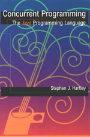

In February 1998, Oxford University Press published Concurrent Programming: The Java Programming Language, ISBN 0-19-511315-2, by Stephen J. Hartley of Drexel University. To order, call 1-800-334-4249 or visit http://www.oup-usa.org/docs/0195113152.html.
To give software professionals and operating systems and concurrent programming students experience writing concurrent programs in Java, a well-known programming language. This will reinforce and increase their knowledge of semaphores, monitors, message passing, remote procedure calls, and the rendezvous as tools for concurrent thread synchronization and communication.
The abundance of hype Java receives should not distract us from the fact that it has many excellent features for sequential programming: object-oriented, no explicit pointers and no pointer arithmetic, automatic garbage collection and no memory leaks, strong typing, platform independence, and many compiler and run-time checks. The Java development kit comes with a rich collection of class libraries for data structures, IO, networking, remote procedure calls, and graphics. Since threads are built-in, Java can be used for concurrent programming and developing multithreaded applications. In particular, it can be used by instructors as the concurrency platform in operating systems and related courses to give students practice and experience in concurrent programming.
Designed for students and professional programmers, this books covers multithreading issues such as race conditions, critical sections, mutual exclusion, and condition synchronization. Java programs that use semaphores and monitors are shown as examples. Next, the book describes several thread communication tools: message passing, the rendezvous, and remote procedure calls, also illustrated with Java examples. These tools are used extensively in client-server programming. An algorithm animation package, written in Java, is used in several of the example programs. The book concludes with a brief introduction to parallel processing with Java in a shared-memory multiprocessor or a distributed memory cluster environment.
All program and library class source code is available over the Internet using the following URLs.
http://www.mcs.drexel.edu/~shartley/ConcProgJava/bookJavaExamples.tar.gz http://www.mcs.drexel.edu/~shartley/ConcProgJava/bookJavaExamples.zip http://www.mcs.drexel.edu/~shartley/ConcProgJava/bookJavaExamples.html ftp://ftp.mcs.drexel.edu/pub/shartley/bookJavaExamples.tar.gz ftp://ftp.mcs.drexel.edu/pub/shartley/bookJavaExamples.zipThe first in a gzip-compressed tar archive file, the second is a zip archive, and the third is a Web page of links to each program using the book's numbering scheme. The last two are anonymous ftp access alternatives for the first two.
A listing of the source code can be downloaded as a gzip-compressed Postscript file using the URLs
http://www.mcs.drexel.edu/~shartley/ConcProgJava/bookJavaExamples.ps.gz ftp://ftp.mcs.drexel.edu/pub/shartley/bookJavaExamples.ps.gzand printed on any Postscript printer after uncompressing.
Preface List of Figures List of Tables 1 Introduction 1.1 Hardware and Software Concepts 1.1.1 Processes 1.1.2 Threads 1.1.3 Hardware and Software Interrupts 1.1.4 CPU Scheduling and Context Switching 1.1.5 Hardware Protection 2 The Java Programming Language 2.1 Sequential Features 2.1.1 Single-Class Static Programs 2.1.2 Multi-Class Static Programs 2.2 Objects 2.3 Command Line Argument Parsing 2.4 Inheritance 2.4.1 Interfaces 2.4.2 User-Defined Exceptions 2.5 Packages 2.5.1 Mathematical Functions 2.6 Genetic Algorithms 2.7 Animating Programs with Java's AWT 2.8 Exercises 3 Concurrent Programming 3.1 Java Threads 3.1.1 Thread States and Scheduling 3.1.2 Other Thread Methods 3.2 Why Use Threads? 3.3 Debugging Techniques 3.4 Race Conditions and Thread Synchronization 3.4.1 Memory System Behavior 3.4.2 Thread Priorities and Starvation 3.5 The Mutual Exclusion Problem 3.5.1 Software Solutions for Two Threads 3.5.2 Software Solution for More Than Two Threads 3.5.3 Hardware Solutions 3.5.4 Blocking Solutions 3.6 Exercises 4 Semaphores 4.1 Definitions and Implementation 4.2 Java Semaphores 4.2.1 Binary Semaphores 4.2.2 Counting Semaphores 4.3 Classical Operating Systems Problems 4.4 Semaphore Solutions 4.4.1 The Bounded Buffer Producer and Consumer 4.4.2 Using Bounded Buffers 4.4.3 The Sleeping Barber 4.4.4 The Dining Philosophers 4.4.5 The Readers and Writers 4.5 Deadlock 4.6 Counting Semaphores From Binary 4.7 Animating Operating Systems Algorithms 4.8 Exercises 5 Monitors 5.1 Definitions 5.2 Signal and Exit 5.2.1 The Bounded Buffer Producer and Consumer 5.2.2 The Dining Philosophers 5.2.3 The Readers and Writers 5.3 Signal and Continue 5.3.1 Java Monitors 5.3.2 The Bounded Buffer Producer and Consumer 5.3.3 The Dining Philosophers 5.3.4 The Readers and Writers 5.4 Deadlock 5.5 Binary and Counting Semaphore Monitors 5.6 Locks 5.7 Notification Objects 5.8 Implementing Monitors with Semaphores 5.8.1 Named Condition Variables for Java 5.9 Algorithm Animation 5.10 Exercises 6 Message Passing and the Rendezvous 6.1 Message Passing Definitions 6.2 Message Passing in Java 6.2.1 Synchronization Using Message Passing 6.2.2 Distributed Mutual Exclusion 6.2.3 Conditional Message Passing 6.2.4 The Distributed Dining Philosophers 6.3 Rendezvous 6.3.1 Conditional Rendezvous 6.4 Remote Method Invocation 6.5 More Animation with Java 6.6 Exercises 7 Parallel Computing 7.1 Definitions 7.2 Data Parallel Message Passing 7.3 Worker Crew Message Passing 7.4 Shared Memory Parallelism 7.5 Patterns of Communication 7.6 Exercises Bibliography Index List of Programs/Classes List of Library Classes Program and Library Class Source Code
Errors, typos, and corrections.
SJH shartley@mcs.drexel.edu